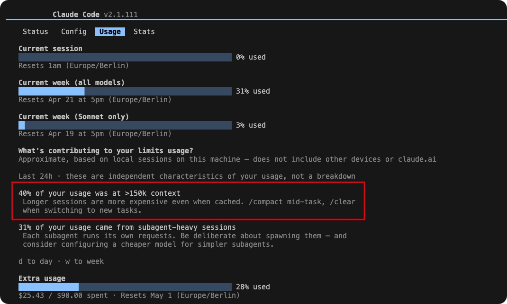

Context management in Claude Code: when to continue, compact, or start fresh
Even on the Max plan, long sessions routinely hit usage limits. Most consumption comes from a handful of very long context windows, not many short ones. Here is how I think about managing context — and the framework Anthropic published for doing it systematically.
The usage problem in practice
I am on Claude's Max plan, which gives a generous monthly allowance. For most of the month, I barely notice the limit. Then, in the space of a day or two, I burn through a large chunk of it. The culprit is always the same: one or two sessions where I kept going long past the point of diminishing returns, accumulating context until the conversation window was enormous.
The screenshot below shows what this looks like in the usage dashboard. A small number of long-context sessions account for most of the consumption. Short focused sessions barely register.

Usage dashboard: a handful of long sessions dominate monthly consumption.
This is not just a cost issue. Model reasoning quality degrades as the context window fills. The model has to attend over more tokens, older context gets diluted, and the assistant starts making mistakes it would never make in a fresh session. Long context hurts output quality as much as it hurts your usage balance.
The Anthropic session management guide
Anthropic published a practical blog post on exactly this problem: Using Claude Code: session management and 1M context. I recommend reading it. It covers four strategies — continue, compact (/compact), start fresh, and spin off sub-agents — with concrete guidance on when each one applies.